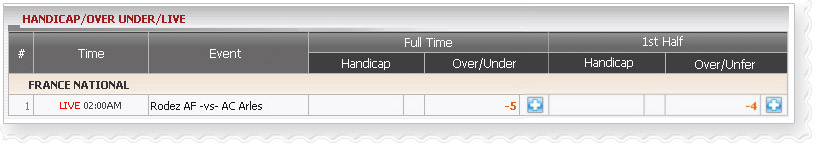
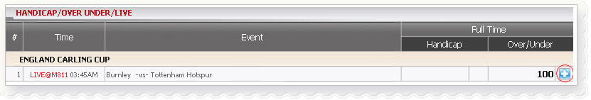
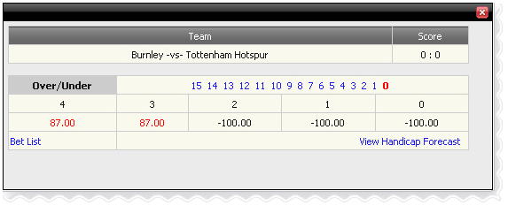

Handicap/Over Under/Live
Definition:
Show agent’s win/loss based on position taking for tickets which have bet type Handicap/Over Under/Live for 1st Half or Full Time.

Handicap/Over Under/Live _01
With FRANCE NATIONAL League, members bet on match Rodez AF-vs-AC Arles and details as below
- 1st bet: stake = 10, odds = 0.85, bet type: Over/Under, Full Time, Agent position taking(PT) = 50%
--> Agent's earning based on PT = - (stake* PT) = -10*50% = -5
- 2nd bet: stake=100, odds = -0.81, bet type: Over/Under, First Half, agent PT = 50%
--> Agent 's earning based on PT = - (stake* PT* odds) = -10*50%*0.81 = -4
Note:
- Agent's earning based on PT for Handicap = (Total Home stake – Total Away stake) * Agent PT.
- Agent's earning based on PT for Over/Under = (Total Over stake – Total Under stake) * Agent PT.
- Sign "-" means total turnover for Away/Under greater than total turnover for Home /Over
- Odds < 0 then Agent earning amount= stake * Agent PT * odds
- Odds > 0 then Agent earning amount= stake * Agent PT
Forecast function
This function helps agent figure out win/loss amount based on Home score, Away score. To view the winlost forecast, click “+” sign. In this example member01 placed a bet 200 on Home team - Burnley with Handicap=2.5, odds= 0.87, bettype=Over, agent position taking =50%.

Handicap/Over Under/Live _02
The popup window will appear as below:

Forecast
This is Over/Under Forecast and details as below:
- 1: -100 --> If (Home score + Away score) = 1 then Agent will win: 200*50% = 100
- 2: -100 --> If (Home score + Away score) = 2 then Agent will win: 200*50% = 100
- 3: 87 --> If (Home score + Away score) = 3 then Agent will lose: 200*0.87*0.5 = 87
- 4: 87 --> If (Home score + Away score) = 4 then Agent will lose: 200*0.87*0.5 = 87
Note:
For Handicap Forecast, the result will be calculated by Home score minus Away score.